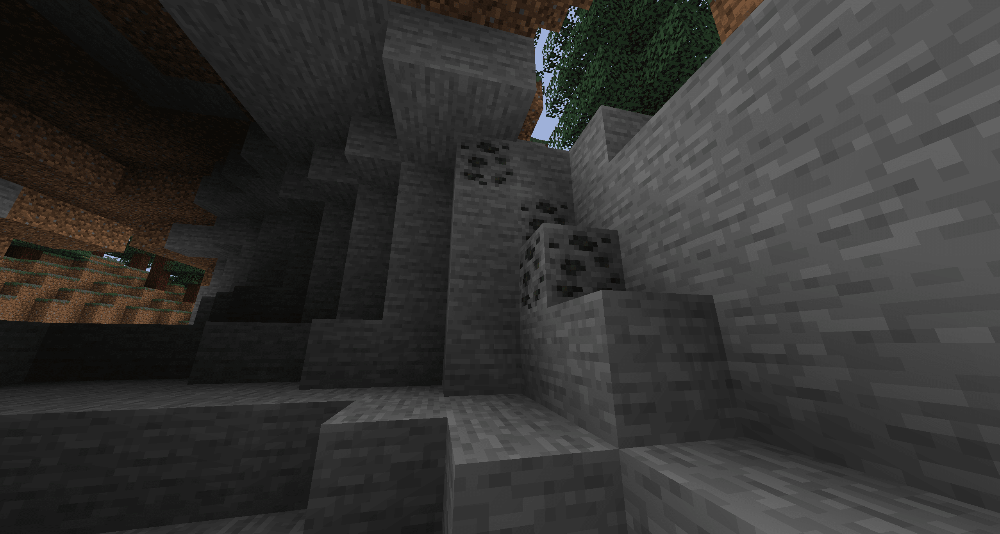
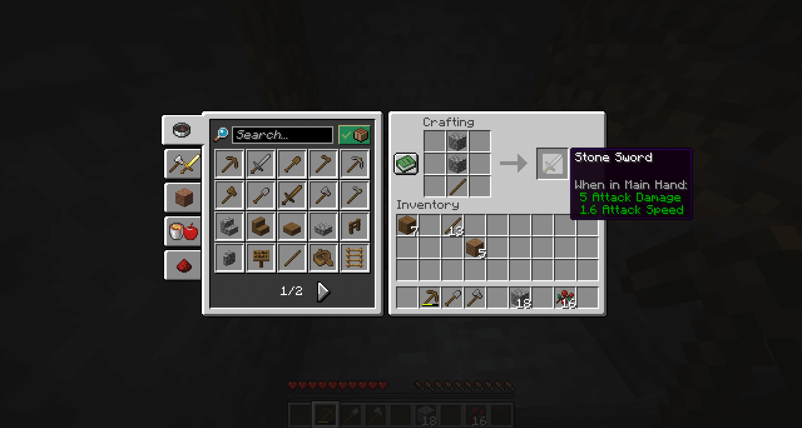
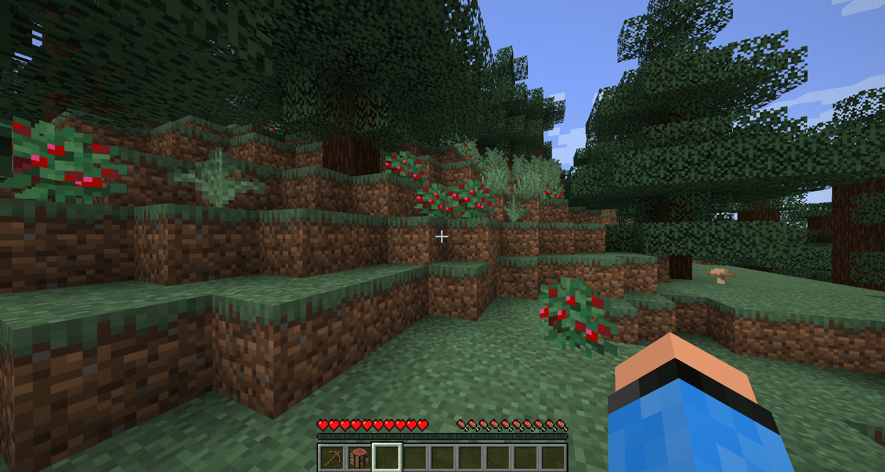
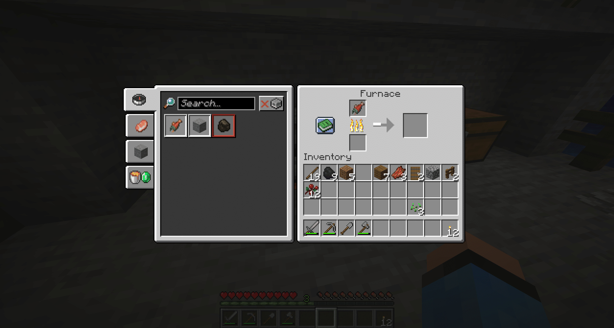
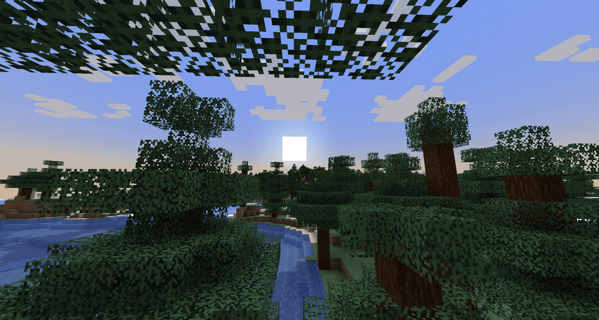
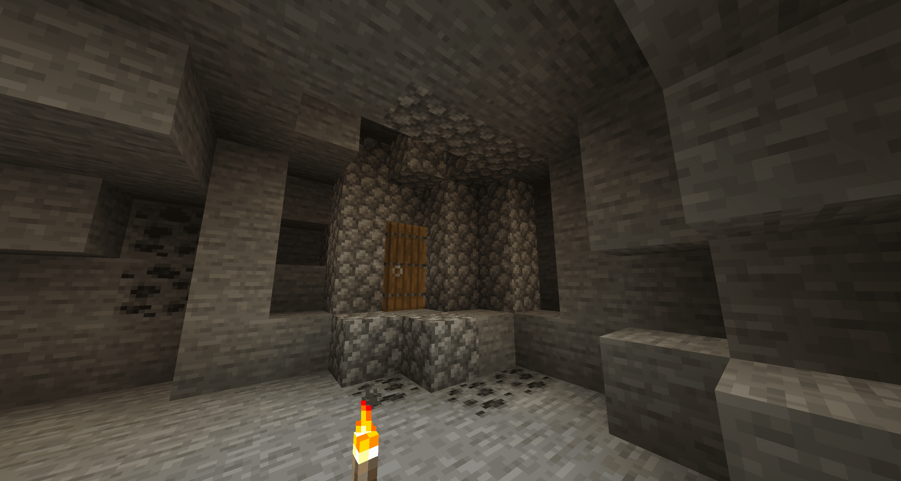

Minecraft'ta Hayatta Kalma Taktikleri
Minecraft artık 15 yıldan uzun süredir piyasada olmasına rağmen, ilk gece her zaman yeniden ürkütücü ve özellikle yeni oyuncular için büyük bir meydan okuma oluyor. Çünkü bu oyun, adından da anlaşılacağı gibi, hayatta kalma üzerine kurulu. İlk bakışta sakin görünen bir dünyada hayatta kalmak zorundasınız, ancak gece olduğunda işler oldukça zorlu bir hale gelebilir. İlk gece, doğduğunuz nokta ve haritaya bağlı olarak çok farklı olabilir, bu yüzden tüm faktörleri dikkate almak zor olabilir. Yine de deneyeceğiz ve Minecraft’ta ilk gecemizi nasıl hayatta kalabildiğimize dair en iyi örnekleri sizinle paylaşacağız. Ne kadar çok oynarsanız, o kadar kolaylaşacak!
İlk Kaynaklarını Topla
Minecraft’ta bir dünya oluşturduğunuzda, bu dünya rastgele oluşturulur. Tanımadığınız bir dünyada uyanırsınız ve önce bir yönünüzü belirlemeniz gerekir. Tam olarak neredeyim? Etrafımda ne var? İlk birkaç saniyede çevrenizi iyi bir şekilde inceleyin, böylece yönünüzü bulabilirsiniz. Sonrasında en önemli kaynakları aramaya başlamalısınız. Odun, bu noktada en önceliklidir ve çoğu biyomda kolayca bulunabilir. Bizim oyun senaryomuzda bir ladin ormanında doğduk, ancak çevrenizde meşe, huş veya hatta orman olabilir. Ne olursa olsun, önce birkaç ağacı çıplak ellerinizle kesin.

Biraz ağaç gövdesi topladıktan sonra envanterinizi açmalısınız. Orada sizi bekleyen ilk yardımcı şeylerden biri var. Yeşil kitaba tıklayın ve tarifleri açın. Normal ahşap tahtalar ve ardından bir çalışma masası yapın. Ayrıca, odun ile çubuklar oluşturmalı ve bunlardan bir tahta kazma yapmalısınız.
Bir sonraki önceliğiniz taş olmalıdır. Bunu yamaçlarda veya mağaralarda bulacaksınız. Çok derine inmeden, kazmanızla biraz taş kırın, bu envanterinizde Cobblestone’a dönüşecektir. Şanslıysanız, duvarda siyah lekeler de bulabilirsiniz. Bu kömürdür! Bunu da kırın, çünkü ileride ihtiyacımız olacak.
İlk Araçlarını Yap!
Cebinizde biraz Cobblestone, daha fazla odun ve kömür olduğunda, hayat çok daha kolaylaşır. Taşlardan yeni araçlar yapın, bunlar arasında yeni bir kazma, kürek ve balta bulunur. Tarif kitabı, topladığınız yeni hammaddelerle yenilenir ve size yardımcı olur. Çubuklar ve kömür ile karanlık noktaları aydınlatmak için meşaleler yapabilirsiniz. Ayrıca bir kılıç da hazır bulundurmalısınız, çünkü bu bir sonraki aşamada size çok yardımcı olacak!
Yiyecek Arayışına Çık
Yiyecek için şunları yapabilirsiniz:
-

Çiğ et veya balık bulursanız, bunları bir fırında pişirmeniz gerekir. Bu şekilde daha uzun süre tok kalırsınız ve kendinizi zehirleme riskiniz olmaz. Fırını kömür veya odun gibi yanıcı malzemelerle yakabilirsiniz.
Koyunlara Dikkat Edin
Hayvanlardan bahsetmişken, koyunlara da dikkat etmelisiniz. Çünkü bu hayvanlar size sadece lezzetli et sağlamakla kalmaz, aynı zamanda değerli yün de verir. Üç yün ve üç ahşap tahta size bir yatak verir ve bu sayede ilk gecenizi atlayabilirsiniz! Eğer biraz şanslıysanız ve demir bulduysanız, koyunları makasla kırkabilirsiniz. Eğer yoksa, onları öldürüp birer yün alabilirsiniz. Bizim oyun senaryomuzda maalesef şansımız yaver gitmedi, çevrede koyun yoktu … ve diğer hayvanlar da yoktu. Bu durumu biraz zorlaştırdı.
İlk Gece İçin Barınak
Gün muhtemelen yavaş yavaş sona eriyor. İlk gününüzde çok şey yaşadınız! Ve umarım gece için hazırlıklısınız. Güneşin durumunu gözlemlemek için yukarı bakın. Ufka yaklaştığında, bir barınak yapma zamanı gelmiş demektir!
Geceyi hayatta kalmak için birkaç farklı yol vardır. Ahşap veya başka bir malzemeden bir kulübe inşa edin, toprağa kazın veya bir mağara bulun. Bizim durumumuzda, sonuncusunu yaptık. Mağarayı inşa edin ki canavarlar size saldıramasın. Bir yatakla geceyi uyuyarak geçirebilirsiniz, ancak bizim şansımız olmadı ve beklemek zorunda kaldık.
